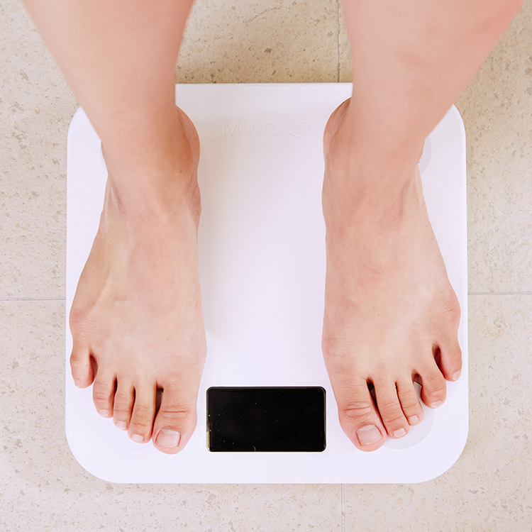

Nobody likes cutting weight. It often leaves you feeling drained, and adds stress and worry to a situation that needs no extra stress. Worst of all, it can seem like there is no "right" way to cut weight. Everybody has their own way of doing it, and the results can be inconsistent and lead to a diminished ability to perform.
For a good weight-cut, we need to be able to accurately control processes and predict outcomes so that we can worry less about the cut, and focus on the competition. This website helps you take the guess work out of cutting, and uses science-driven processes to help you maintain peak performance while getting your weight where it needs to be as quickly and painlessly as possible.
There are three main sections you'll see on this site:
General Nutrition
Nutrition doesn't only matter when it's time to make weight. This page will help you understand the basics of nutrition so that you can not only understand what's going on in your weight cut, but also how to fuel your body to get the most out of your training year-round.
Weight Loss
Losing weight comes down to simple principles, but that doesn't mean it's easy. This page will help you maintain optimal athletic performance while losing weight, as well as help make it more manageable from a psychological standpoint.
Water Cut
You can resonably lose 10% of your body weight in water, but if you work against your body's natural regulatory processes, it can leave you sucked out and unable to perform at your best. This page will help you execute your water cut and rehydration as painlessly and effectively as possible.
Calculators
The weight cut needs to be precise so that you can accurately predict and control your weight loss. This will allow you to be as efficient as possible, and not sacrifice performance by restricting too much, or spending too much time in a depleted state.
That's why we've created calculators on this site so that you can type in a few variables, like height and weight, and know exactly how much of each nutrient to consume, how much you can expect to lose in initial water weight, and how much to consume directly after training.
Basal Metabolic Rate
Find out how many calories you burn on a daily basis based on your body size and activity level
Water Weight
Find out how much water you can expect to lose after depleting stored sodium and carbohydrates
Post-Workout Nutrition
Find out what, and how much to consume after training based on your body size and workout intensity